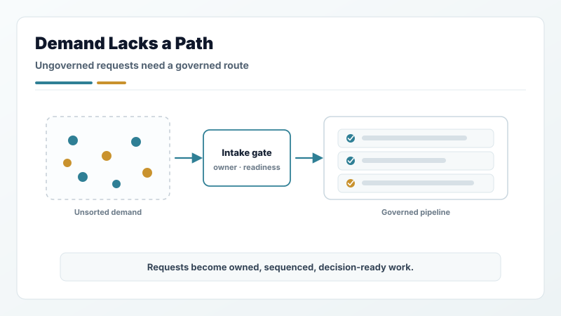
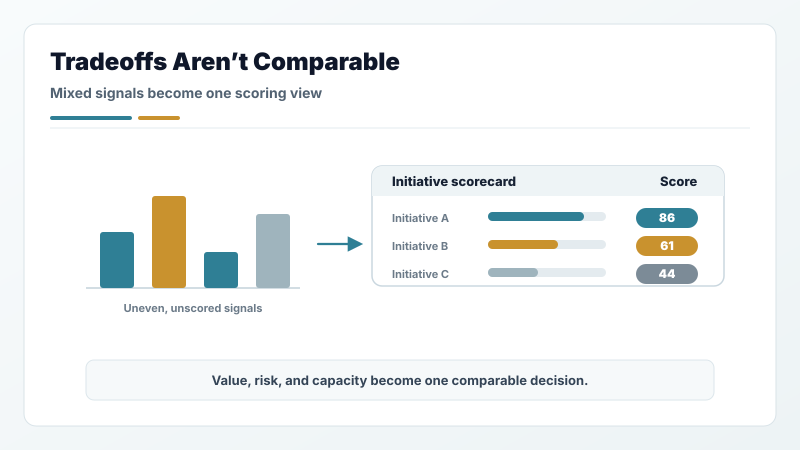
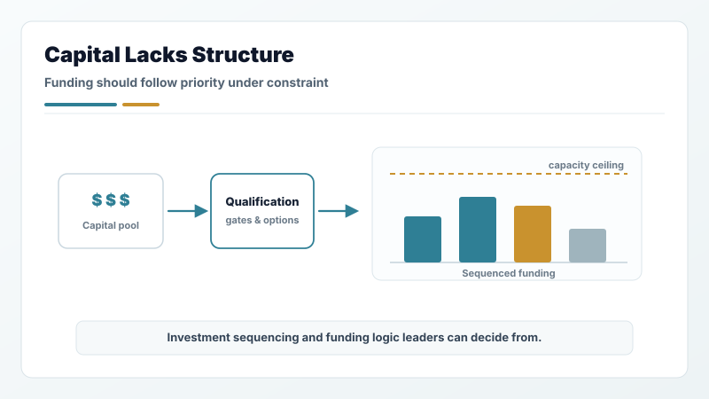
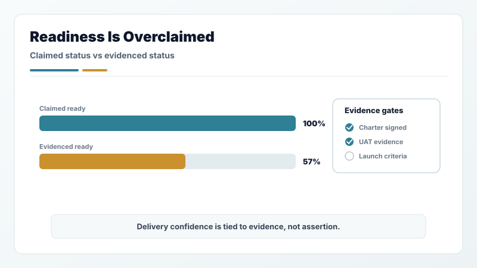
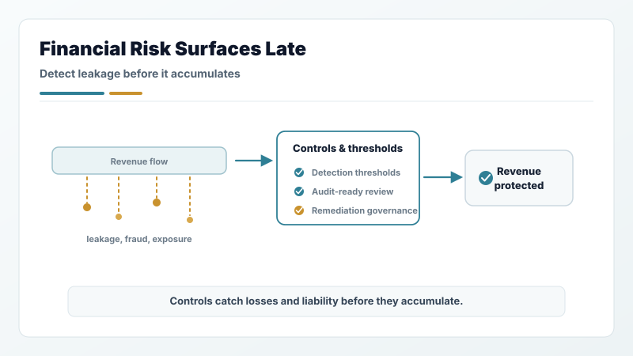
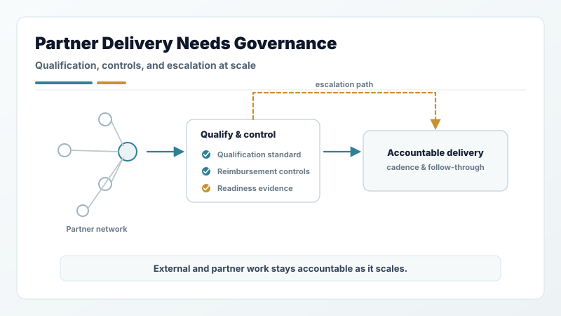
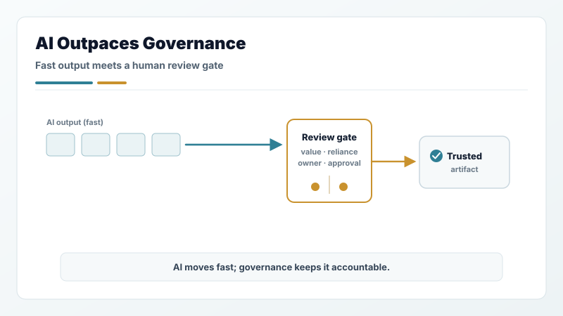
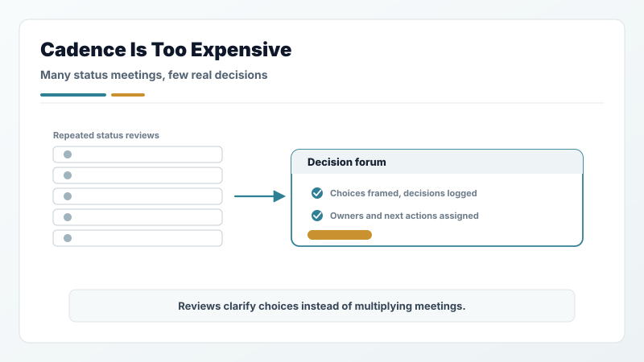
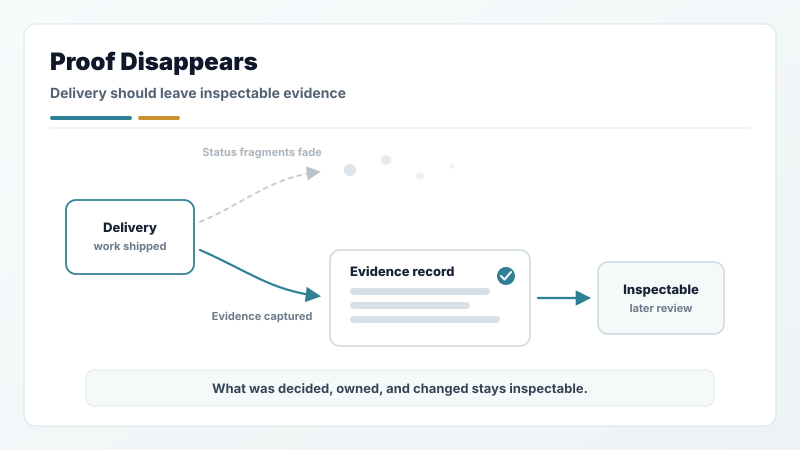

T-Mobile revenue technology
Reset a large initiative portfolio from distorted work-in-progress and year-long cycle times into readiness-gated flow.
Hiring-leader view
Marco Policani turns scattered demand, hidden tradeoffs, readiness gaps, and AI workflow risk into executive-ready decisions and accountable delivery.
The case for Marco
Most portfolio problems are not caused by a lack of effort. They come from weak signal: demand enters without readiness, priorities compete without shared criteria, governance forums review stale information, and delivery claims separate from evidence.
My work is to make that system visible and usable: clear intake, comparable tradeoffs, decision cadence, delivery readiness, ownership, controls, and follow-through.
Director / Principal PMO, EPMO, PPMO, portfolio governance, program operations, executive operations, and Chief-of-Staff-adjacent roles where leaders need stronger cadence, visibility, decision support, and accountable execution.
Proof signals
Reset a large initiative portfolio from distorted work-in-progress and year-long cycle times into readiness-gated flow.
Governed a global partner-delivered platform family with multibillion-dollar contract exposure and nine-figure liability pressure.
Integrated software, construction, and cybersecurity planning across constrained energy-storage delivery environments.
What I would be hired to fix

Ideas, mandates, requests, and sponsor asks need readiness checks, owner clarity, lifecycle state, and a clean path into executive review.

Leadership needs a way to see value, risk, capacity, dependencies, timing, and decision consequences without turning every review into a debate from scratch.

Investment sequencing, funding-model shifts, and capital commitments need qualification gates, comparable options, and CIO/CFO-ready decision logic so money follows priority under real constraint.

Charters, UAT, launch criteria, exceptions, controls, and value realization need to stay connected so delivery confidence is based on evidence.

Revenue leakage, reimbursement exposure, fraud, and compliance gaps need detection thresholds, audit-ready controls, and remediation governance before losses or liability accumulate.

Partners, vendors, and managed-services delivery need qualification standards, reimbursement and compliance controls, readiness evidence, and escalation paths so external work stays accountable at scale.

AI-enabled workflow assets need business-value review, reliance boundaries, human review gates, owner accountability, and artifact lifecycle discipline.

Status reviews should clarify choices, decisions, and ownership. I design the materials and forums that reduce noise instead of multiplying meetings.

Portfolio work should leave inspectable evidence: what was decided, why it mattered, who owned it, what changed, and how value was followed through.
Next step
For a quick hiring read, start here. For evidence, open the named case studies. For working style, follow the walkthroughs and workflow systems.